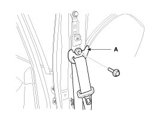
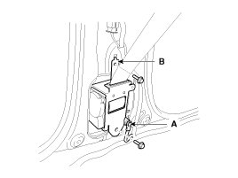
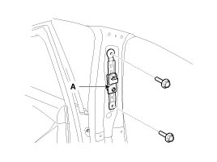
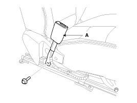
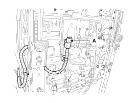

Front Seat Belt
Replacement
Front Seat Belt Replacement
CAUTION:
- When installing the belt, make sure not to damage the pretensioner.
1. Remove the following items first :
A. Front seat assembly
B. Front door scuff trim & rear door scuff trim
2. Disconnect the battery negative cable, and wait for at least three minutes before beginning work.
3. To remove the seat belt anchor pretensioner (C), keep on pushing the lock pins (A) as arrow direction.
And then remove the seat belt after pushing the lock pin (B).

4. Remove the center pillar lower trim (A).

5. After loosening the mounting bolt, then remove the center pillar upper trim (A).

6. After loosening the mounting bolt, then remove the front seat belt upper anchor (A).
Tightening torque :
39.2 - 53.9 N.m (4.0 - 5.5 kgf.m, 28.9 - 39.8 lb-ft)

7. After disconnecting the pretensioner connector lock pin, remove the seat belt pretensioner connector (A), loosen the mounting bolts, then remove the pretensioner (B).
Tightening torque :
39.2 - 53.9 N.m (4.0 - 5.5 kgf.m, 28.9 - 39.8 lb-ft)

8. Installation is the reverse of removal.
Height Adjust Replacement
1. Remove the following items first :
A. Front seat assembly
B. Front door scuff trim & Rear door scuff trim
C. Anchor pretensioner & Front seat belt lower anchor
D. Center pillar lower trim
E. Center pillar upper trim
F. Front seat belt upper anchor
2. After loosening the bolts, then remove the height adjustor (A).
Tightening torque :
39.2 - 53.9 N.m (4.0 - 5.5kgf.m, 28.9 - 39.8 lb-ft)

3. Installation is the reverse of removal.
NOTE:
- Replace any damaged clips.
- Make sure the height adjusts properly.
Front Seat Belt Buckle Replacement
1. Remove the front seat assembly.
2. After loosening the mounting bolt, then remove the front seat belt buckle (A).
Tightening torque :
39.2 - 53.9 N.m (4.0 - 5.5 kgf.m, 28.9 - 39.8 lb-ft)

3. Disconnect the connector mounting clip (A).

4. Installation is the reverse of removal.